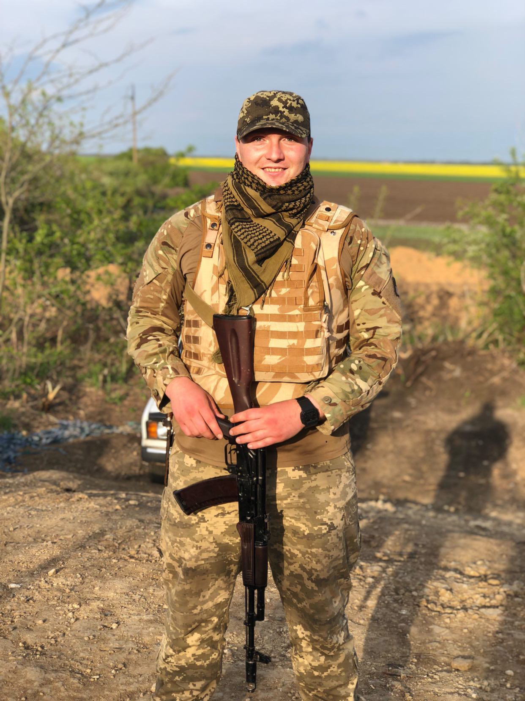

Я єсть Народ, якого Правди сила ніким звойована ще не була

(21.08.1997 – 09.07.2025 рр.)
Іван Олександрович Момотенко народився 21 серпня 1997 року у місті Березівка Одеської області. Дитячі роки та юність провів у рідному місті. Батьки згадують історію з першого класу: перша вчителька скаржилася, що Ваня читає повільніше за інших. Коли батько запитав сина про причину, хлопчик відповів: «Зате я швидше за всіх їм».
Навчався у Березівській середній школі №3. Дуже любив спорт, особливо баскетбол. Виступав за збірну школи та збірну району на обласних змаганнях під керівництвом Петра Ранкіча. Команда школярів Березівського району двічі ставала чемпіоном області. Юнак також займався бджолярством, полюванням та мав хист до кулінарії.
У 2015 році вступив до Південноукраїнського національного педагогічного університету імені К. Д. Ушинського в Одесі. Закінчив його у 2019 році, здобувши ступінь бакалавра за напрямом «фізичне виховання» та кваліфікацію «вчитель фізичної культури».
Іван пробував себе у різних професіях: працював на «Укрпошті», у магазині техніки, на хлібзаводі. З 2021 року працював в охоронній фірмі в Одесі. У період повномасштабної війни захопився риболовлею й мріяв займатися цим професійно.
Він був добрим, чуйним, цілеспрямованим і комунікабельним, завжди допомагав людям безкорисливо. Оптимістично ставився до життя, мав гарне почуття гумору, проявляв лідерські якості й умів працювати в команді. Його харизма була відчутною: коли він танцював — усі дивилися на нього, коли співав — усі слухали. Найголовніше — Іван був справжнім патріотом України. Ще під час АТО разом із друзями брав участь у навчальних заходах руху «АЗОВ».
З 25 лютого 2022 року добровільно став на захист країни. Виконував обов’язки бойового медика в Очакові та під Херсоном. У 2023 році пройшов навчання у Німеччині, після чого став інструктором групи інструкторів. Їздив до багатьох навчальних центрів України, підвищуючи кваліфікацію та передаючи знання іншим військовослужбовцям.
У 2023 році був відзначений Почесним нагрудним знаком Головнокомандувача Збройних Сил України «Золотий хрест».
Перед початком повномасштабної війни Іван познайомився зі своєю майбутньою дружиною Валерією. У жовтні 2022 року вони одружилися. Подружжя мало багато спільних мрій: подорожувати світом, народити двох дітей, побудувати будинок і прожити життя разом.
9 липня 2025 року, виконуючи військовий обов’язок, Іван загинув унаслідок ворожого ракетного обстрілу. Сержант, інструктор групи інструкторів військової частини Іван Момотенко пішов із життя у розквіті сил, сповнений мрій і сподівань. Йому назавжди 27 років.
Без опори залишилися батьки Олександр Іванович та Маргарита Іванівна, кохана дружина Валерія, сестра Анастасія та брат Олександр.
Похований із військовими почестями на Алеї Слави в місті Березівка.